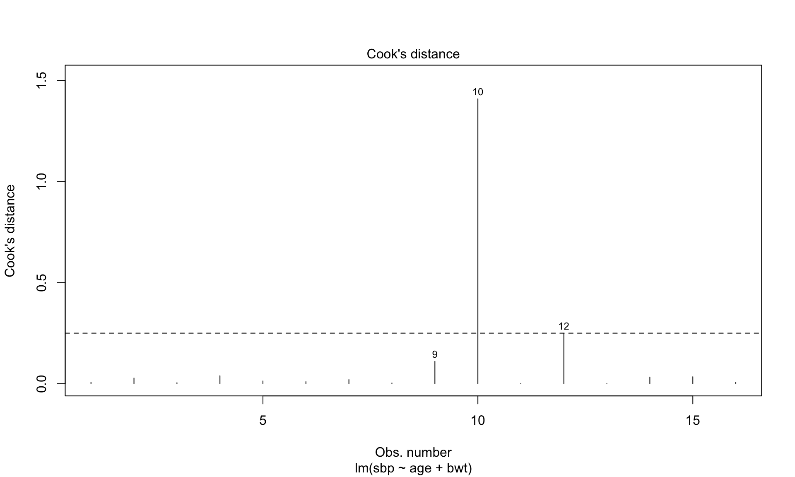
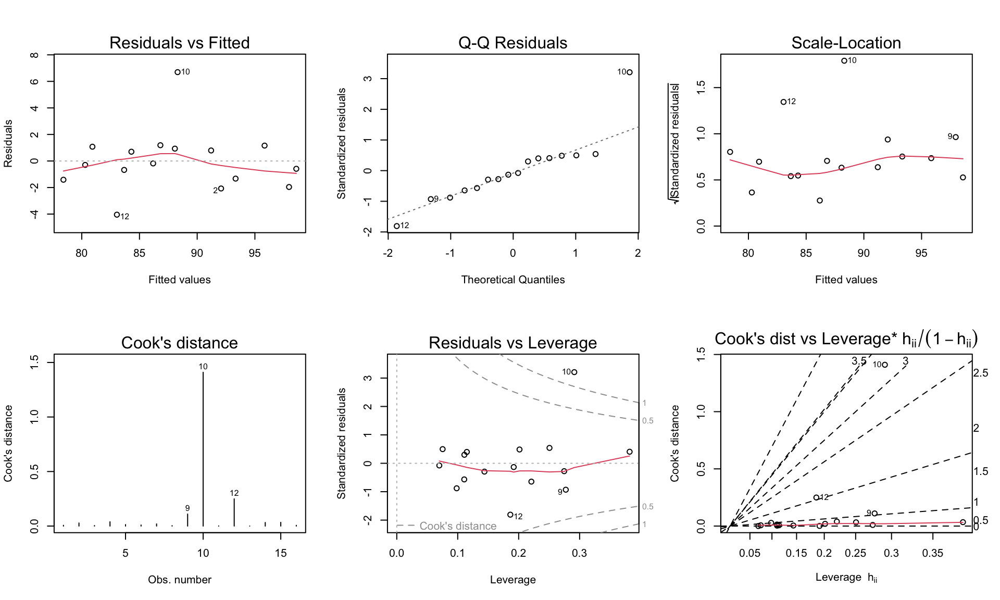
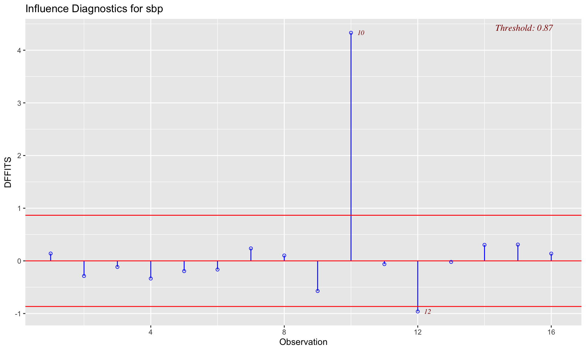
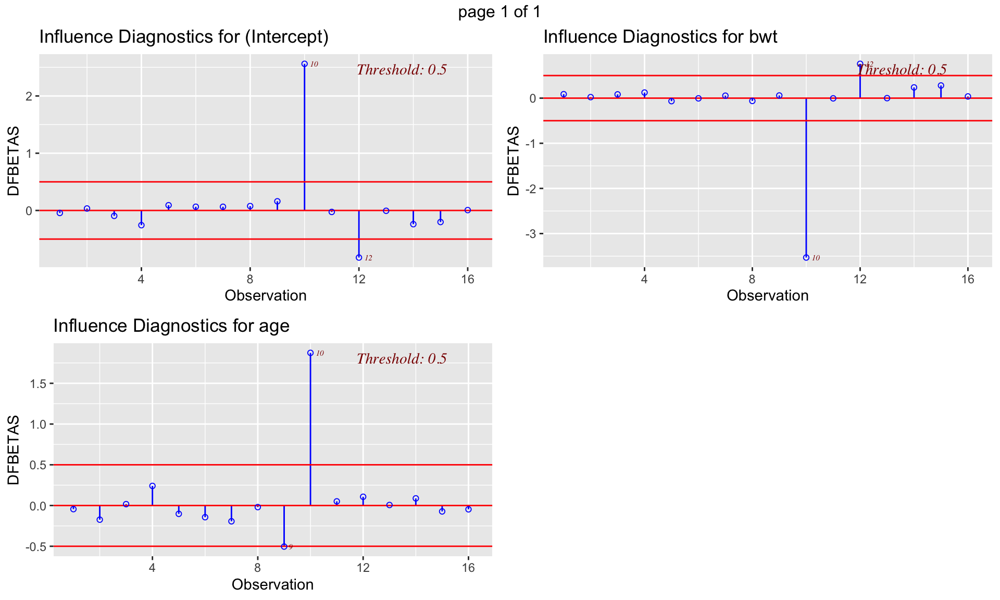
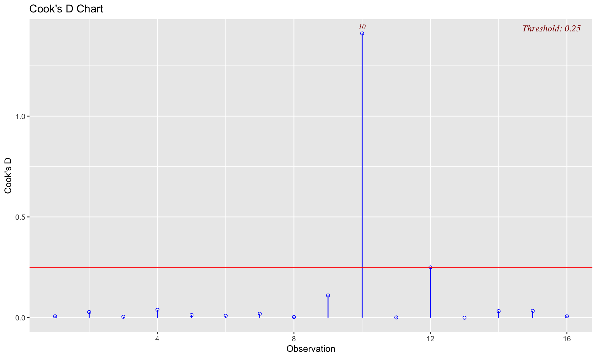

rm(list=ls())
data = read.csv(file="systolic1.csv",header=T)
attach(data)
head(data) X idno bwt age sbp
1 1 1 135 3 89
2 2 2 120 4 90
3 3 3 100 3 83
4 4 4 105 2 77
5 5 5 130 4 92
6 6 6 125 5 98rm(list=ls())
data = read.csv(file="systolic1.csv",header=T)
attach(data)
head(data) X idno bwt age sbp
1 1 1 135 3 89
2 2 2 120 4 90
3 3 3 100 3 83
4 4 4 105 2 77
5 5 5 130 4 92
6 6 6 125 5 98m = lm(sbp~age+bwt)m.h = hatvalues(m)
Hmisc::describe(m.h)m.h
n missing distinct Info Mean Gmd .05
16 0 16 1 0.1875 0.1052 0.07389
.10 .25 .50 .75 .90 .95
0.08676 0.11088 0.18910 0.25659 0.28428 0.31395
0.0697907837801668 (1, 0.062), 0.0752553865370032 (1, 0.062),
0.0982736316188607 (1, 0.062), 0.110674934201722 (1, 0.062),
0.110942588214302 (1, 0.062), 0.114957398402998 (1, 0.062),
0.143841727260561 (1, 0.062), 0.186331801757595 (1, 0.062),
0.191863318017576 (1, 0.062), 0.201387339965205 (1, 0.062),
0.220836864879333 (1, 0.062), 0.250568764776732 (1, 0.062),
0.274657625908908 (1, 0.062), 0.277311861533657 (1, 0.062),
0.291252174688852 (1, 0.062), 0.382053798456529 (1, 0.062)
For the frequency table, variable is rounded to the nearest 0m.h[which.max(m.h)] 15
0.3820538 m.h[which(m.h>0.5)]named numeric(0)m.h[which(m.h>0.2)] 4 6 7 9 10 14 15
0.2208369 0.2746576 0.2013873 0.2773119 0.2912522 0.2505688 0.3820538 m.h[which(m.h>2*mean(m.h))] 15
0.3820538 m = lm(sbp~age+bwt)
m.dffits=dffits(m)
m.dfbeta=dfbeta(m)
m.D=cooks.distance(m)
m.covratio=covratio(m)n = nrow(data); p = m$rank
plot(m, which=4); abline(h=4/n,lty=2)
par(mfrow=c(2,3)) #read more from ?plot.lm
plot(m,which=1);plot(m,which=2);plot(m,which=3)
plot(m,which=4);plot(m,which=5);plot(m,which=6)
which( (abs(m.covratio-1) > 3*p/n) ) 6 10 11 14 15
6 10 11 14 15 plot(m.covratio); abline(1+3*p/n,0); abline(1-3*p/n,0)
olsrr::ols_plot_dffits(m) # 2*sqrt(p/n) = 0.87
olsrr::ols_plot_dfbetas(m) # 2/sqrt(n) = 0.5
olsrr::ols_plot_cooksd_chart(m) # 4/n = 0.25
head(m.dfbeta) (Intercept) age bwt
1 -0.2045439 -0.03108126 0.0031034240
2 0.1574761 -0.11915728 0.0007786718
3 -0.4445305 0.01198643 0.0029572369
4 -1.1931804 0.16776952 0.0043569151
5 0.4265684 -0.07134988 -0.0023561434
6 0.3055446 -0.10121075 -0.0001731949(ind.max.dfbeta = which.max(abs(m.dfbeta[,"age"])))10
10 m.dfbeta[ind.max.dfbeta,](Intercept) age bwt
5.51250523 0.60524180 -0.05757384 se.betaA = summary(m)$coef["age","Std. Error"]
betak_minus_betakremove = m.dfbeta[,"age"]*se.betaA
coef(m)["age"]-betak_minus_betakremove[ind.max.dfbeta] age
5.476031 m.remove = lm(sbp~age+bwt,data=data[-ind.max.dfbeta,])
coef(m.remove)["age"] age
5.282477 coef(m)["age"]-betak_minus_betakremove[ind.max.dfbeta] age
5.476031 coef(m)["age"] age
5.887719 which.max(m.D)10
10 which.max(abs(m.covratio-1))10
10 m.h = hatvalues(m)
m.sigmaratio = m.covratio*(1-m.h)
(ind.max.sigma = which.max(m.sigmaratio))13
13 (m.sigmaratio[ind.max.sigma])^(1/p)*(summary(m)$sigma)^2 13
6.655477 m.remove2 = lm(sbp~age+bwt,data=data[-ind.max.sigma,])
(summary(m.remove2)$sigma)^2[1] 6.655477(m.sigmaratio[ind.max.sigma])^(1/p)*(summary(m)$sigma)^2 13
6.655477 (summary(m)$sigma)^2[1] 6.146297